Miguel
Yuji
Sobre mim, meus gostos, curiosidades e os lugares que já fui e que quero ir.
Sobre mim
Nome completo
Miguel Yuji de Brito
Animais
Uma chihuahua (Alice), uma shih-tzu (Boo) e uma calopsita (Joaquim)
Ocupação
Estudante
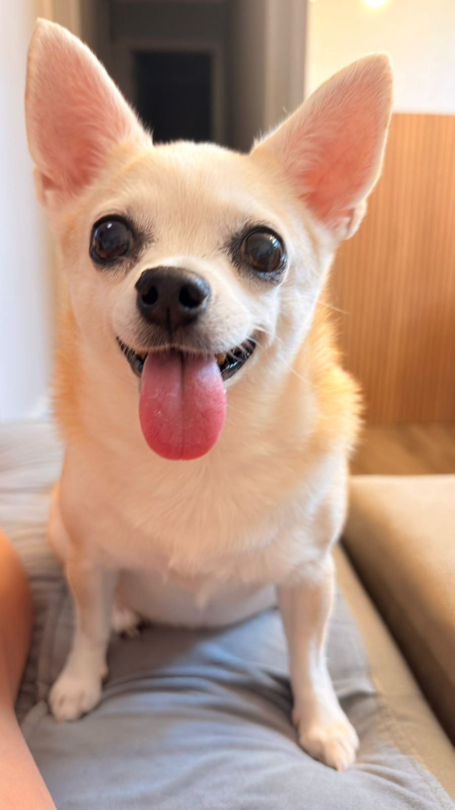
Alice
Chihuahua
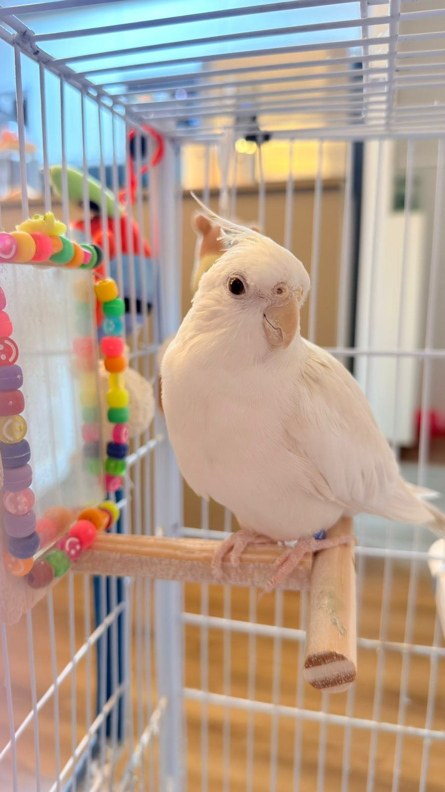
Joaquim
Calopsita
Gostos pessoais
01
Star Wars
02
Pokémon
03
Palmeiras
04
Jogos
05
Comida japonesa
Star Wars
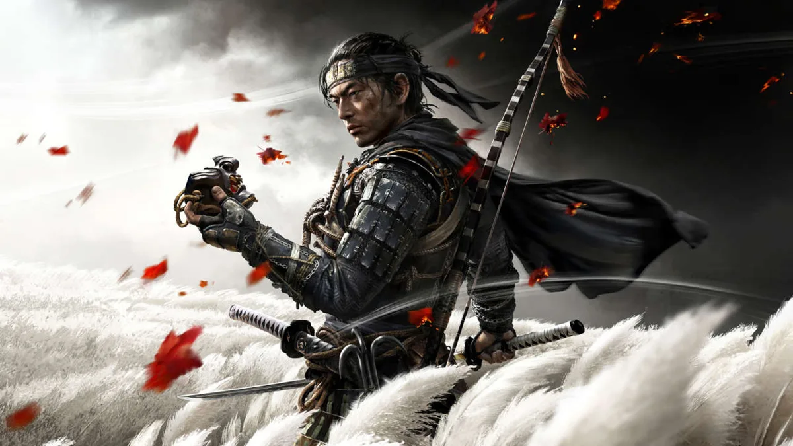
Jogos
Curiosidades
Meu Pokémon favorito é o Rockruff.
Saiba mais sobre Rockruff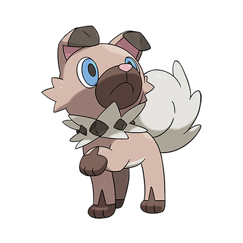
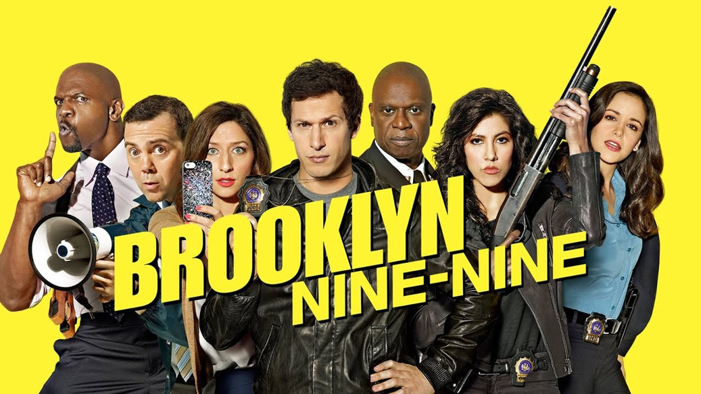
Gosto MUITO de montar Lego.
Bonsai Williams Racing FW14B e Nigel Mansell Nave de Assalto de Classe Acclamator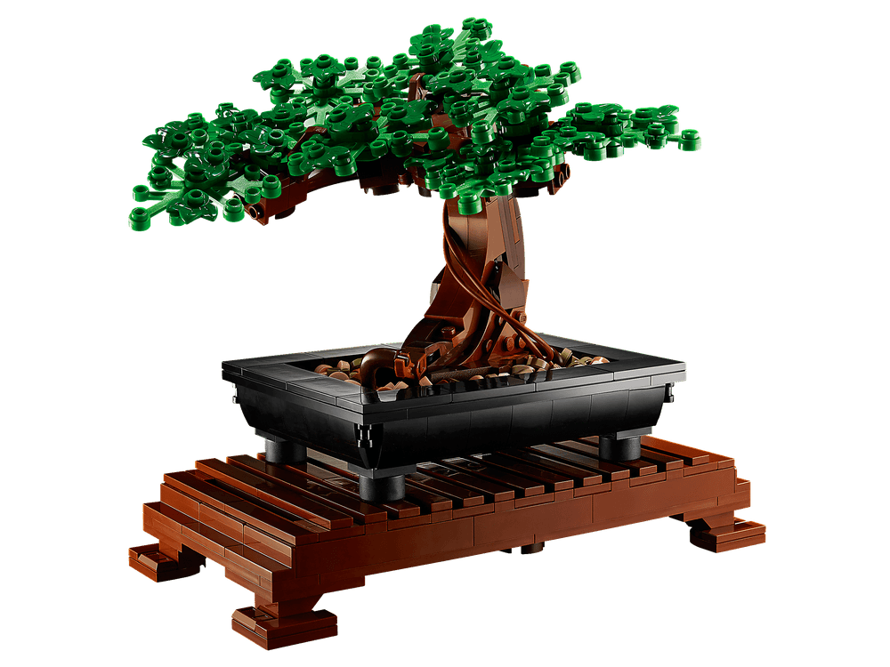
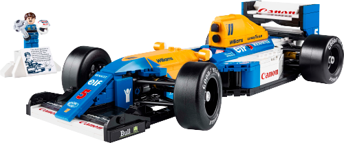
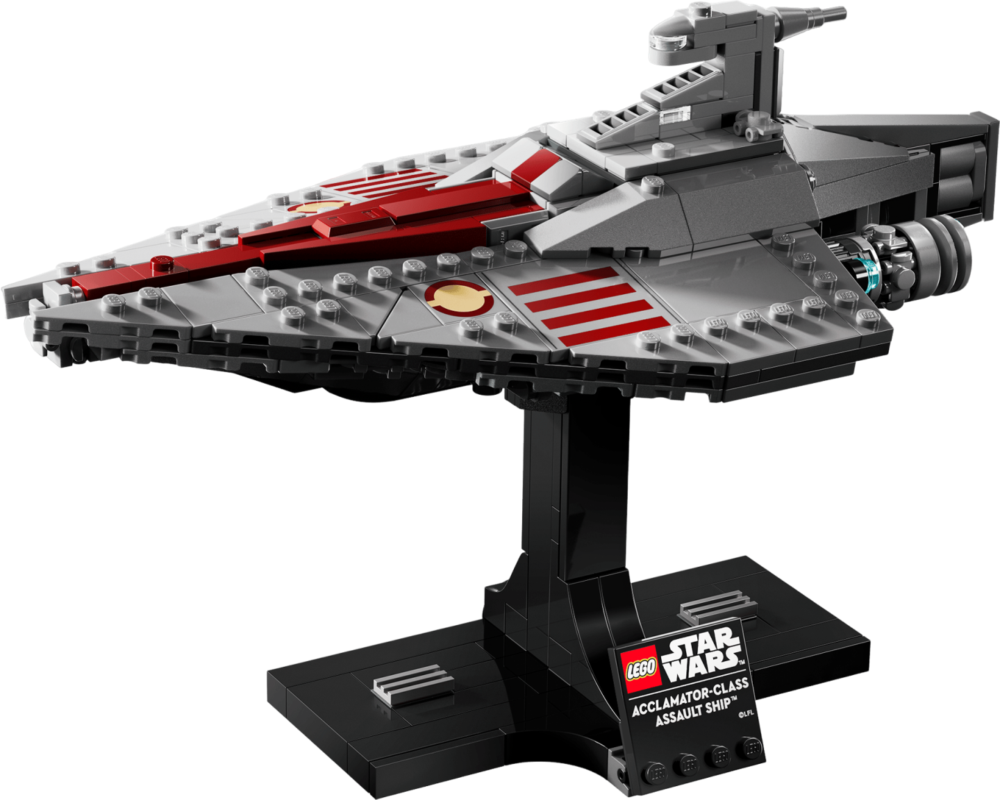
Lugares que eu já fui
Paraguaçu Paulista
Fui muitas vezes para lá, principalmente para ver a minha bisavó.
Saiba mais sobre Paraguaçu Paulista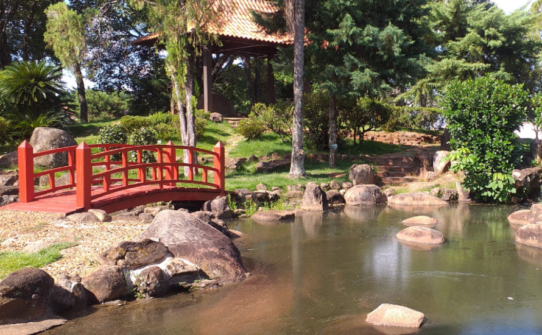
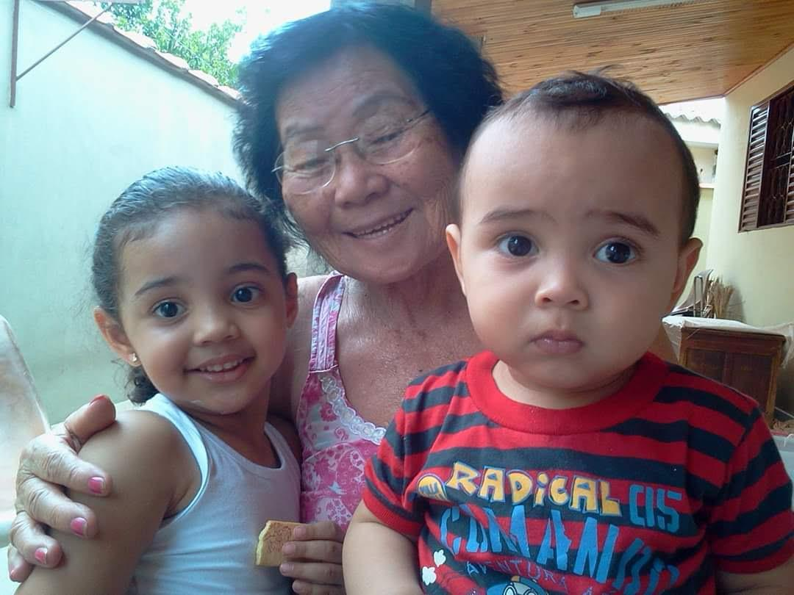
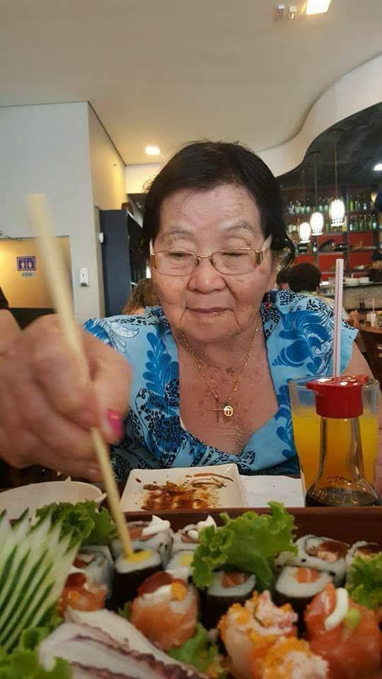
Porto de galinhas - 2021
Fui nas férias de 2021 em um hotel chamado Enotel.
Saiba mais sobre Porto de Galinhas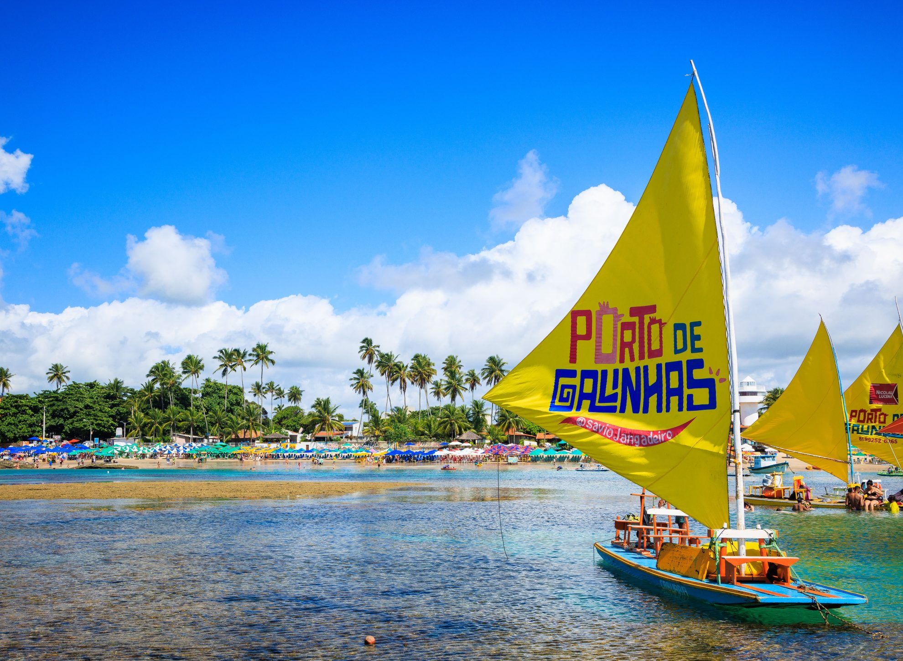
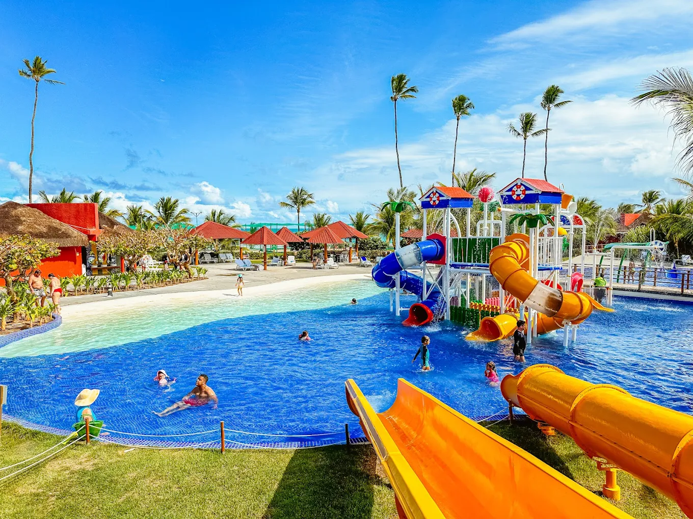
Lugares que eu quero ir
Nara, Japão.
Saiba mais sobre Nara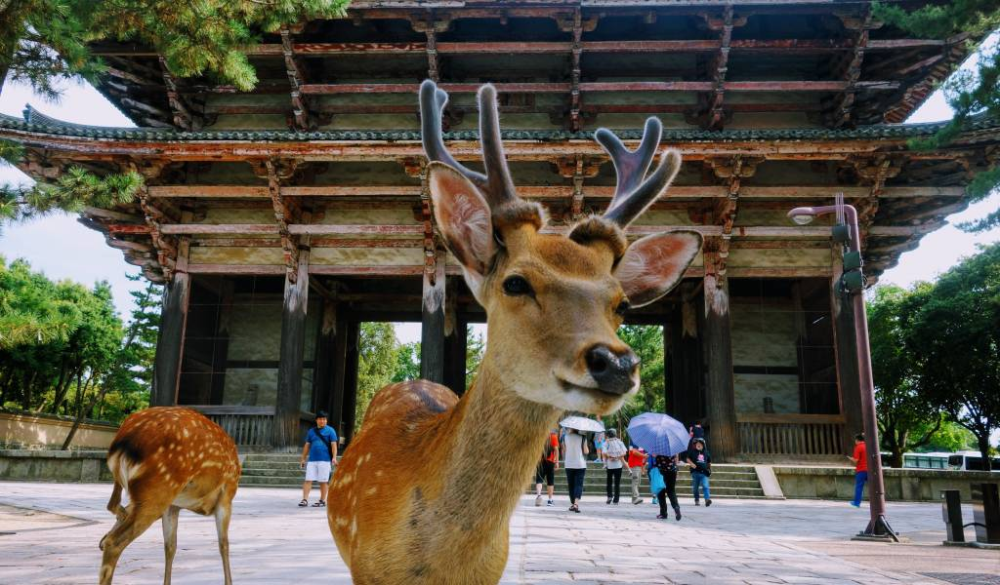